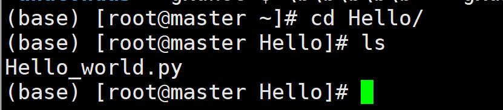
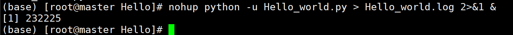
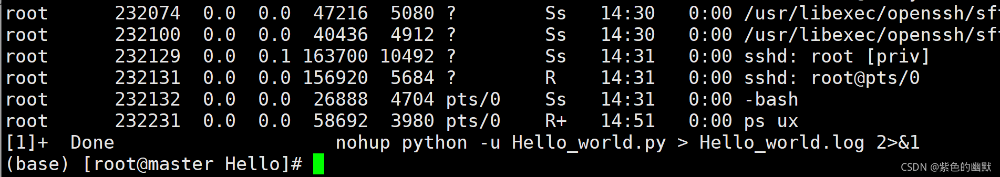
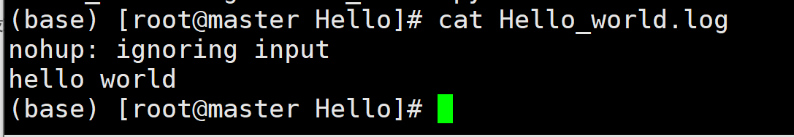

linux后台运行python程序
linux后台运行python程序
1.连接服务器，进入存放python文件的文件夹

2.输入nohup python -u Hello_world.py > Hello_world.log 2>&1 & 命令运行.py文件

nohup命令：nohup命令用于不挂断地运行命令（关闭当前session不会中断改程序，只能通过kill等命令删除)。
使用nohup命令提交作业，如果使用nohup命令提交作业，那么在缺省情况下该作业的所有输出都被重定向到一个名为nohup.out的文件中，除非另外指定了输出文件。
-u:python命令加上-u（unbuffered)参数后会强制其标准输出也同标准错误一样不通过缓存直接打印到屏幕。
2>&1 &详解
bash中：
1 | # 0 代表STDIN_FILENO 标准输入（一般是键盘）， |
1 | # > 直接把内容生成到指定文件，会覆盖原来文件中的内容[ls > test.txt], |
1 | # 2>&1就是用来将标准错误2重定向到标准输出1中的。此处1前面的&就是为了让bash将1解释成标准输出而不是文件1。至于最后一个&，则是让bash在后台执行。 |
命令解释引用自下述博客：
3.运行后会显示一个PID号，上图中为232225,可以输入ps ux命令查看后台所有进程，如图该进程已结束

4.输入cat Hello_world.log命令查看最终结果

本博客所有文章除特别声明外，均采用 CC BY-NC-SA 4.0 许可协议。转载请注明来自 nccoder！